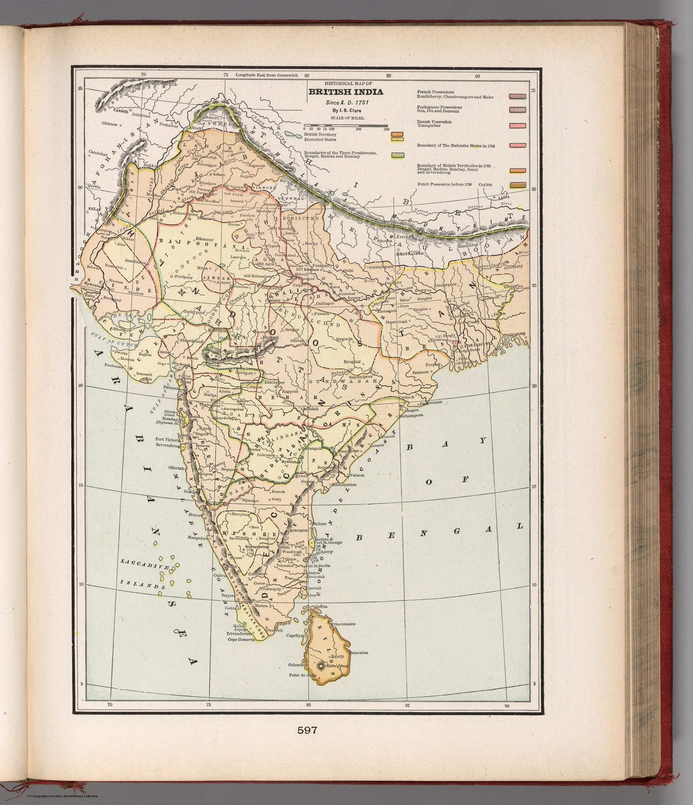

← Administered Empire and Victorian Atlas

Authorship and atlas
The map was compiled by the popular historian Israel Smith Clare for G. F. Cram’s world atlas, where it appeared from 1891; this impression is from the 1901 “new census edition” edited by Eugene Murray-Aaron.
History made spatial
The title selects 1751 as the beginning of its narrative frame. European possessions and the extent of British India are presented as the outcome of a historical process that can be surveyed retrospectively on one sheet.
A finished imperial story
For an American atlas reader in 1901, British domination could appear as a completed chapter of world history. The conflicts, negotiations and varied sovereignties through which it emerged are compressed into a stable coloured result.
The gaze
Dated from 1751, the plate asks its reader to begin with Europeans already present, so the story it tells has no chapter in which India is not contested between them. An American household atlas could offer British rule as something to be looked up like a treaty date, with the colours standing in for the verdict.
In the Deccan timeline